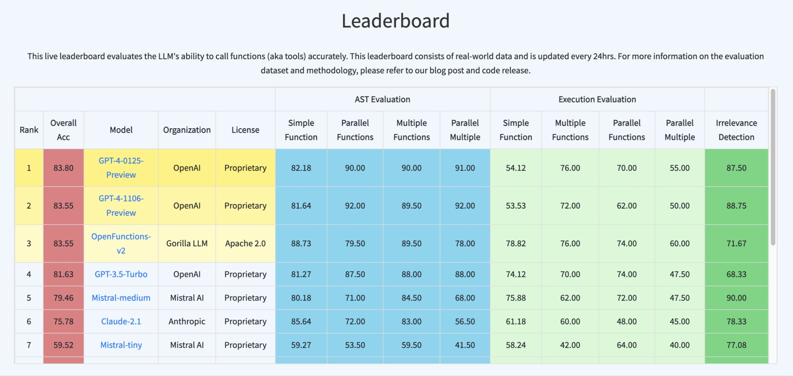

🦍 Gorilla: Large Language Model Connected with Massive APIs
Berkeley Function-Calling Leaderboard
Fanjia Yan* Huanzhi Mao* Charlie Cheng-Jie* Tianjun Zhang Shishir G. Patil Ion Stoica Joseph E. Gonzalez
Since late 2022, Large Language Models (LLMs) have caught everyone's attention because of their capability to perform general tasks. Beyond chatting, it is natural to adopt and integrate these models to develop many AI applications and softwares (e.g., Langchain, Llama Index, AutoGPT, Voyager). Models like GPT, Gemini, Llama, Mistral etc, have demonstrated huge potential in this route by interacting with the external world with function calling and execution.
We present Berkeley Function-Calling Leaderboard (BFCL), the first comprehensive and executable function calling evaluation for LLMs function calling. Different from prior function calling evaluations, such as the Anyscale function calling dataset, we consider function callings of various forms, different function calling scenarios, and the executability of function calls.We built this dataset from our learnings to be representative of most users' function calling use-cases, for example, in agents, as a part of enterprise workflows, etc. To this end, our evaluation dataset spans diverse categories, and across multiple languges. We also release our model Gorilla-Openfunctions-v2, the best open-source models so far to handle function calls with multiple programming languages and parallel and multiple function calls. We also provide a specific debugging feature that when the provided function is not suitable for your task, the model will output an “Error Message”.
Berkeley Function Calling Leaderboard 🏆
Berkeley Function Calling Leaderboard (BFCL) aims to provide a through study of the function calling capability of different LLMs. It consists of 2k question-function-answer pairs with multiple languages (python, java, javascript, restAPI), diverse application domains and complex usecases (multiple function calls where the LLM needs to select one or more functions from multiple functions provided, and parallel function calls that the LLM needs to make multiple function calls together). We also investigate function relevance detection, to determine how the model will react when the provided function is not suitable to answer the user's question (in such case an "Error Message will be provided"). In more details, BFCL includes 100 Java, 50 JavaScript, 70 REST API, 100 SQL and 1,680 Python on various simple, parallel, multiple, executable functions calling scenarios as well as function relevance detection.
The leaderboard is shown below in the Figure, we can see that GPT-4 (from OpenAI) function calling is still leading the evaluation, whereas the Gorilla OpenFunctions-v2 (from Gorilla LLM) almost gets similar performance to them. Ranking below is the Mistral-medium model (from Mistral AI) and Claude-2.1 (from Anthropic). This suggests that a finetuned open-source model can also perform almost close to propatiery models in function calling tasks without chaining them together.
We tried our best to cover real-world use cases and diverse languages. We will continue to expand our testing domains and come up with creative usecases in the future.
Berkeley Function Calling Leaderboard (BFCL) aims to provide a through study of the function calling capability of different LLMs. It consists of 2k question-function-answer pairs with multiple languages (python, java, javascript, restAPI), diverse application domains and complex usecases (multiple function calls where the LLM needs to select one or more functions from multiple functions provided, and parallel function calls that the LLM needs to make multiple function calls together). We also investigate function relevance detection, to determine how the model will react when the provided function is not suitable to answer the user's question (in such case an "Error Message will be provided"). In more details, BFCL includes 100 Java, 50 JavaScript, 70 REST API, 100 SQL and 1,680 Python on various simple, parallel, multiple, executable functions calling scenarios as well as function relevance detection.
The leaderboard is shown below in the Figure, we can see that GPT-4 (from OpenAI) function calling is still leading the evaluation, whereas the Gorilla OpenFunctions-v2 (from Gorilla LLM) almost gets similar performance to them. Ranking below is the Mistral-medium model (from Mistral AI) and Claude-2.1 (from Anthropic). This suggests that a finetuned open-source model can also perform almost close to propatiery models in function calling tasks without chaining them together.
We tried our best to cover real-world use cases and diverse languages. We will continue to expand our testing domains and come up with creative usecases in the future.
 LLMs' performance on Berkeley Function-Calling Leaderboard (BFCL)
In order to better dive in and visualize the results, we also provide an interactive hexagon tool for the users to compare different models. We break these into 9 categories: Function irrelevance detection, the AST tree checking and execution function call checking for simple, multiple, parallel multiple functions. With this, we can clearly see that in which of our tests the model is doing non-satisfactory. In terms of simple single function callings, the propatiery models and open-source ones perform similar. But GPT-series models outperform the open-source ones when it involves multiple and parallel function calling.
 Detailed analysis using Berkeley Function-Calling Leaderboard (BFCL) Wagon Chart
Detailed analysis using Berkeley Function-Calling Leaderboard (BFCL) Wagon Chart
Dataset Composition
The Gorilla OpenFunctions evaluation dataset grows from its previous 100 entries to 1900 entries! The evaluation dataset improve its quality and demonstrate diversity in:
- Domains of functions documentations
- Number of function documents and function calls QA pairs
- Data types of different programming languages
Our evaluation JSON functions are scraped and generated from different sources of website. We intentially include domains like using functions related to Mathematics-Algebra, Sports-Soccer, Finance-Mortgage, and etc. We include 40 sub-domains of functions within our generic evaluations. This allows us to understand the model performance not just in data-abundant domains like computing, and cloud, but also niche domains like sports, and law.
 Berkeley Function-Calling Leaderboard (BFCL) Data Composition
Berkeley Function-Calling Leaderboard (BFCL) Data Composition
Evaluation Categories 📊
We break down the majority of the evaluation in two categories:
- Python: Simple Function, Multiple Function, Parallel Function, Parallel Multiple Function
- Non-Python: Function Relevance Detection, REST API, SQL, Java, Javascript
Python Evaluation
Simple Function: Generic single function evaluation contains the simplest but most commonly seen format: the user supplies one JSON function document, with one and only one function call will be invoked.
Multiple Function: Multiple function category contains a user question that only invokes one function call out of 2 - 4 JSON function documentations. The model needs to be capable of selecting the best function to invoke according to user provided context.
Parallel Function: Parallel function is defined as invoking multiple function calls in parallel with one user query. The model needs to digest how many function calls need to be made and the question to model can be a single sentence or multiple sentence.
Parallel Multiple Function: Parallel Multiple function is the combination of parallel function and multiple function. In another word, the model is provided with multiple function documentations, each of the corresponding function calls will be invoked 0 or more times.
Each category has its corresponding Executable category. In this section, we manually write function codes drawing inspiration from some free REST API endpoints (e.g. Get weather) and functions (e.g. Linear regression) that directly computes. Executable category is designed to understand whether the function call generation is able to be utilized in the real world.
Non-Python Evaluation
While the previous categories consist of the majority of our evaluations, we include more specific categories to evaluate model performance in different scenarios and are resilient to irrelevant questions and function documentations.
Function Relevance detection: In no function call category, we design a scenario where none of the provided functions are relevant and supposed to be invoked. We expect the model's output to be no function call. This scenario provides insight to whether a model will hallucinate on its function and parameter to generate function code despite lacking the information to do so.
REST API: A majority of the real world API calls are from REST API calls. Python mainly makes REST API calls through requests.get(), requests.post(), requests.delete() and etc that are included in the python requests library. GET requests are the most common ones used in real world. As a result, we include real world GET requests to test the model's capabilities to generate executable REST API calls through complex function documentations, using requests.get() along with the API's hardcoded URL and description of the purpose of the function and its parameters. Our evaluation includes two variations. The first type requires passing the parameters inside the URL, called path parameters, for example the {Year} and {CountryCode} in GET /api/v3/PublicHolidays/{Year}/{CountryCode}. The second type requires the model to put parameters as key/value pairs into the params and/or headers of requests.get(.). For example, params={'lang': 'fr'} in the function call. The model is not given which type of REST API call it is going to make but needs to make a decision on how it's going to be invoked.
SQL: SQL evaluation data includes our customized sql.execute functions that contains sql_keyword, table_name, columns, and conditions. Those four parameters provide necessary information to construct a simple SQL query like SELECT column_A from table_B where column_C == D Through this, we want to see if through function calling, SQL query can be reliably constructed and utilized rather than training a SQL specific model. In our evaluation dataset, we restricted the scenarios and supported simple keywords, including "SELECT", "INSERT INTO", "UPDATE", "DELETE", "CREATE".
Java + Javascript: Despite function calling formats being the same across most programming languages, each programming language has language specific types. For example, C has pointer type, Java has HashMap type. The goal of this test category is to understand how well the function calling model can be extended to not just JSON and Python type but all the language specific typings.
The above three categories enable us to see how different models perform in some popular use cases of API calls and give us some insights into the potential of function calling models.
Evaluation Metrics📈
We use two popular method to evaluate the accuracy of the model generated answers: AST checker and Execution checker. Ideally one should use execution checker, but when we evaluate the answers, not all the results are easily executable (e.g., Java functions). So we use the AST as a complement to the execution checker.
- Abstract Syntax Tree (AST) Checker
- Execution Checker
AST Checking: For the function call answers generated that are executable, we take parse the function call using AST tree.
Example: [calculate_triangle_area(base=10, height=5)]
Parse: Module(body=[Expr(value=List(elts=[Call(func=Name(id='calculate_triangle_area', ctx=Load()), args=[], keywords=[keyword(arg='base', value=Constant(value=10)), keyword(arg='height', value=Constant(value=5))])], ctx=Load()))], type_ignores=[])
[calculate_triangle_area(base=10, height=5)]
We extract the variables from the AST and check if every parameter can be found and exact matched in possible answers. For each possible answer, what should be the acceptable answer:
- For bool:
- We check the direct matching of boolean values, and don't allow leniency on the string versions of boolean values.
- For integer, float:
- The answer should be unique e.g. [1]
- For List:
- We are checking for exact matches so List of any order should be matched. [1,2,3]==[2,3,1]
- For Dict:
- We skip checking recursive AST dictionary structure for simplicity.
- For String:
- Possibile date "20th June", "2023-06-20", "06/20/2023", "Jun.20,2023"
- Possible Location ["New York City", "NYC"]
- Possibile date "20th June", "2023-06-20", "06/20/2023", "Jun.20,2023"]
- Possible Anything ["Manchester United", "Man United", "Man U", "MUFC"]
Here are some example of possible answer:
{"calculate_triangle_area": {"base": [10], "height": [5], "unit": ["units", "unit"]}}{"predict_house_price": {"bedrooms": [3], "bathrooms": [2], "area": [1800], "location": ["San Francisco", "San Francisco, CA"]}}
This checking mechanism applies to everything except for executable_* and REST.
Executable checking: For executable_* and REST, we have corresponding functions that can be executable for each question. Therefore, directly after the model generates answers, we will take the answers and then execute them in a python environment. There are two types of matchings.
- For executable output that is deterministic, we check for exact matches according to our human execution result.
- For executable output that is non-deterministic and real-world related, we check for its response type and response JSON key consistencies. Seeing whether the value is something we expected to see. Since we observe that sometimes if REST
Prompting
We provide all the prompts we used to evaluate our propatiery and open-source models. For function calling models, since they are specifically designed to generate function calls, we did not provide any system prompt but instead toggle the function calling mode on and put the function definitions where it should be. For chat model, we explicitly provides system message.- For all the function calling models, we did not supply any system prompt but instead toggle the function calling mode on and put the function definitions where it should be.
- For chat model, we explicitly provides system message:
SYSTEM_PROMPT_FOR_CHAT_MODEL = """" You are an expert in composing functions. You are given a question and a set of possible functions. Based on the question, you will need to make one or more function/tool calls to achieve the purpose. If none of the function can be used, point it out. If the given question lacks the parameters required by the function, also point it out. You should only return the function call in tools call sections. """USER_MESSAGE_FOR_CHAT_MODEL = "Questions:{user_prompt}\nHere is a list of functions in JSON format that you can invoke:\n{functions}. Should you decide to return the function call(s), NO other text MUST be included."
Common Mistakes
With our benchmark BFCL, we are able to identify some common mistakes that LLMs make when generating function calls. These mistakes are interesting because they help us understand the limitations of the current models and provide insights into how to improve them.GPTs' function documents are difficult to format and their typings are restrictive in real world scenarios.
"Function": { "name": "calculate_binomial_probability", ... "parameters": { "type": "object", "properties": { "number_of_trials": { "type": "integer", "description": "The total number of trials." }, "number_of_successes": { "type": "integer", "description": "The desired number of successful outcomes." }, "probability_of_success": { "type": "float", The probability of a successful outcome on any given trial.", "default": 0.5 } ... } "required": ["number_of_trials", "number_of_successes"] } }In this case, we need to manually convert float into number to make the function OpenAI compatible. In addition to that, numbers convey less information compared to floats in terms of precision and type consistency.
In Gorilla Openfunctions-v2, we improve the flexibility of the function documents by not restricting the typing of the parameters. In another word, the user can supply Tuple , Float , and even language specific types like HashMap and Linked List in Java!
- GPT underperforms in scenario where the parameters are not immediately available in user question but instead requires some implicit converion. Here is an example:
"Function": { "name": "finance.predict_future_value", ... "parameters": { "type": "object", "properties": { "present_value": { "type": "number", "description": "The present value of the investment." }, "annual_interest_rate": { "type": "number", "description": "The annual interest rate of the investment." }, "compounding_periods_per_year": { "type": "integer", "description": "The number of times that interest is compounded per year.", }, "time_years": { "type": "integer", "description": "The investment horizon in years." } ... } "required": ["present_value", "annual_interest_rate", "time_years"] } }Questions : Predict the future value of a $5000 investment with an annual interest rate of 5% in 3 years with monthly compounding.
GPT-4 output: [{ "name": "finance.predict_future_value", "parameters": { "present_value": 5000, "annual_interest_rate": 5, "compounding_periods_per_year": 12, "time_years": 3 } }]Gorilla-openfunctions-v2 output: [{ "name": "finance.predict_future_value", "parameters": { "present_value": 5000, "annual_interest_rate": 0.05, "compounding_periods_per_year": 12, "time_years": 3 } }] -
Chat Model tend to generate malformed function call in which parameters can be extracted but not executable
Example of mistral-medium generate result like:
solve\\_quadratic\\_equation(a=2, b=6, c=5)". With gorilla-openfunctions-v2, we are able to directly output solve_quadratic_equation(a=3, b=2, c=1) which is executable upon receiving the result. - REST API call inconsistency:
"User": "Can you fetch me the weather data for the coordinates 37.8651 N, 119.5383 W, including the hourly forecast for temperature, wind speed, and precipitation for the next 10 days?" "Function": { "name": "requests.get", ... "parameters": { "type": "object", "properties": { "url": { "type": "string", "description": "The API endpoint for fetching weather data from the Open-Meteo API for the given latitude and longitude, default https://api.open-meteo.com/v1/forecast" } ... } } }GPT-4 output: { "name": "requests.get", "parameters": { "url": "Missing", "params": { "latitude": "37.8651", "longitude": "-119.5383", "forecast_days": 10 }, } }Gorilla-Openfunctions-v2 output: { "name": "requests.get", "parameters": { "url": "https://api.open-meteo.com/v1/forecast"", "params": { "latitude": "37.8651", "longitude": "-119.5383", "forecast_days": 10 }, } }
Conclusion
We provide a comprehensive and systematic evaluation of LLMs for function calling with Gorilla Open Functions Leaderboard. The studies here suggest that in terms of simple function calling (without complex planning and chained function calling), finetuning an open-source can be as effective as propatiery models. Furthermore, we provide Gorilla Open Functions v2, an open-source model that can help users with building AI applications with function calling and interacting with json compatible output.
We hope you enjoyed this blog post. We would love to hear from you on Discord, Twitter (#GorillaLLM), and GitHub.
If you would like to cite Gorilla:
@inproceedings{berkeley-function-calling-leaderboard,
title={Berkeley Function Calling Leaderboard},
author={Fanjia Yan and Huanzhi Mao and Charlie Cheng-Jie Ji and Tianjun Zhang and Shishir G. Patil and Ion Stoica and Joseph E. Gonzalez},
year={2024},
howpublished={\url{https://gorilla.cs.berkeley.edu/blogs/8_berkeley_function_calling_leaderboard.html}},
}